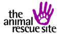
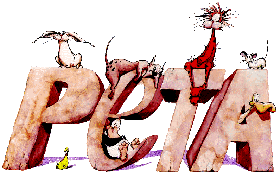
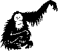
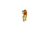

Lynx
|
 Save Big Cats Save Primates Pets in Need |
Click through to these pages to make free donations for animal welfare, both domestic and in the wild. All you do is click, and the sponsors with ads on the following page pay the site a donation. It doesn't get much easier to help animals in need than this. |
|
The London Vegan Meetup Group I am the organiser of the London Vegan Meetup. If you would like to come along and meet some vegans then all are welcome. You don't have to be vegan, just interested in having a vegan meal and knowing more about the vegan lifestyle. We meet usually on a Saturday for lunch each month and the people attending couldn't be more lovely. Click on the link above to sign up and find out where/when our next outing is. |
| American Dietetic Association Vegetarian Diet Summary | The only annoying thing about being a vegan or vegetarian (veg*n is shorthand for both) is that you constantly have to rebuff urban legends about lack of protein etc. The American Dietetic Association is one of the most eminent dietary associations in the world. Before you criticise diets free from animal products, you should read the science behind it. Rather than relying on heresay, conformity and animal exploitative industry advertising. |
|  | One of the most active animal rights organizations in the world. PETA have been instrumental in a number of campaigns notably the anti-fur campaign. PETA is very well known in America and has for better or worse (they have some people who say some pretty stupid things) become a standard bearer for the US movement. |
| Australian HSI | "HSI specialises in the protection of threatened wildlife and habitats, including marine species, and promotes effective implementation of Commonwealth and State laws, and key international treaties. HSI also extends this work practically into the SE Asia region through the provision of small grants to community organisations undertaking on-ground protection activities." |
|  | Living in a country were the timber lords are allowed to function unchecked, the orangutan is facing extinction. Orangutans are thoughtful, intelligent and amazing creatures. Their name is derived from the native words literally meaning "Man of the forest", as humans we need such a creature to stare back into our eyes and remind us of what really is sacred in life. |
| An excellent site loaded with information about animal rights and welfare, and links to many other groups. You could spend a week following the links from this site. |
|  | Tigers are yet another species of wild cat whos numbers are decreasing rapidly, and may only one day be seen in zoos. Most people are shocked to learn that there are only a few thousand of even the most numerous species alive today. The loss of habitat through the ever expanding land needs of people, and hunting for bizarre Asian medicines, have pushed this noble animal to the verge of extinction in the wild. |
| Vegweb | Thousands of animal product free recipes.....go nuts, invite me around for dinner :) |